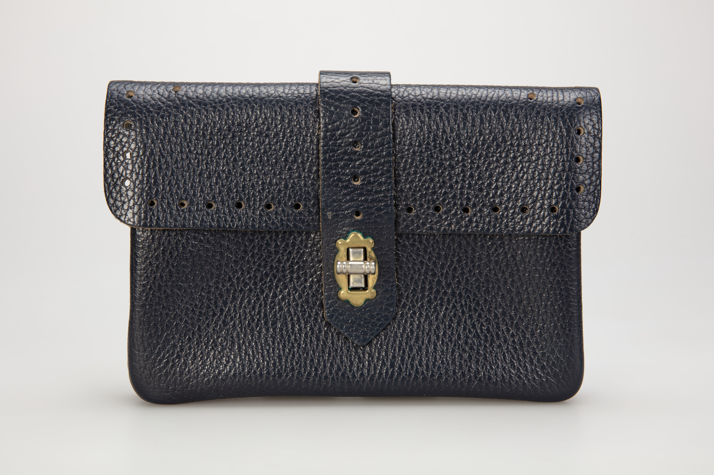
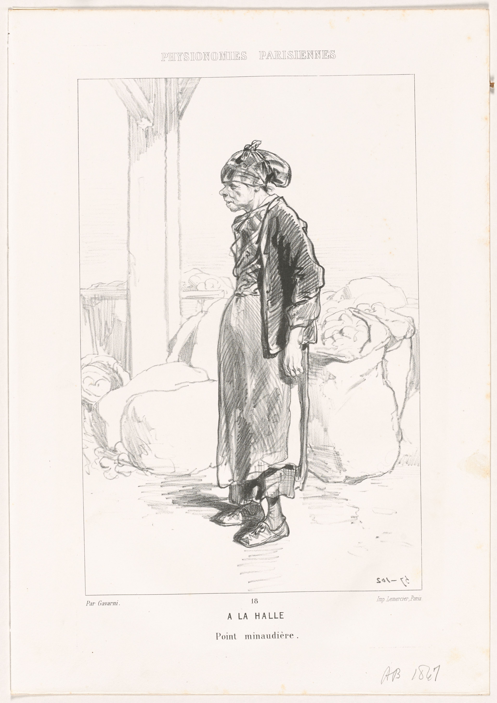
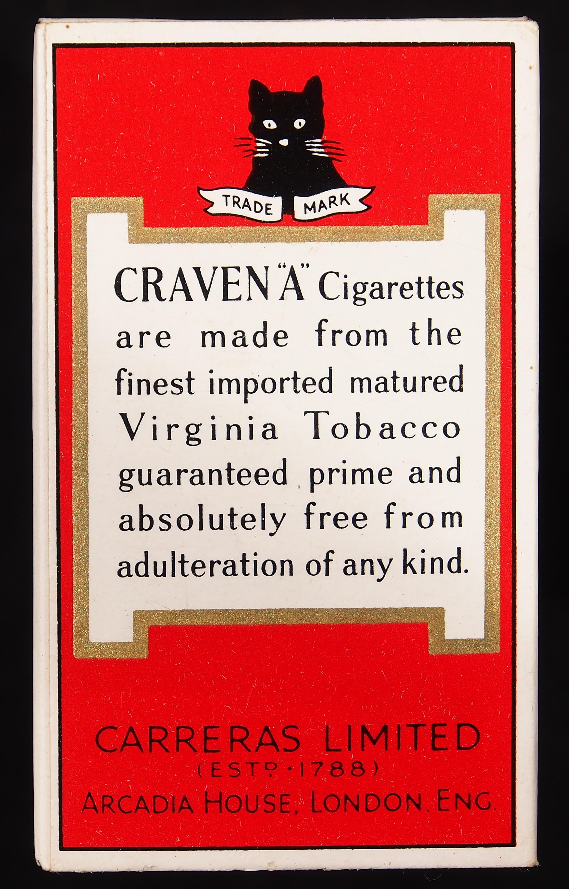
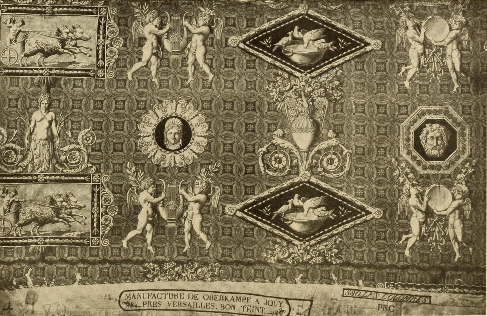
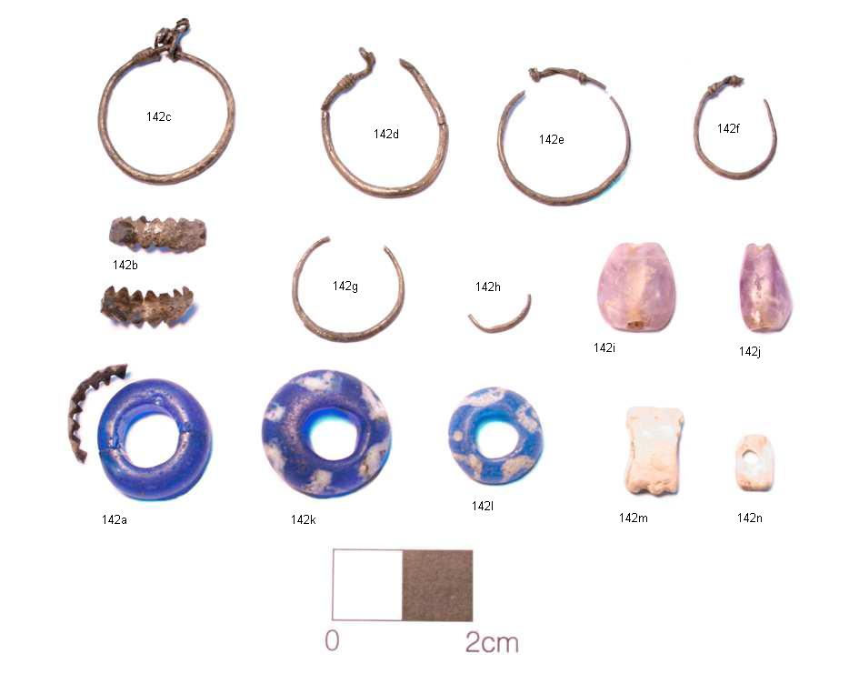
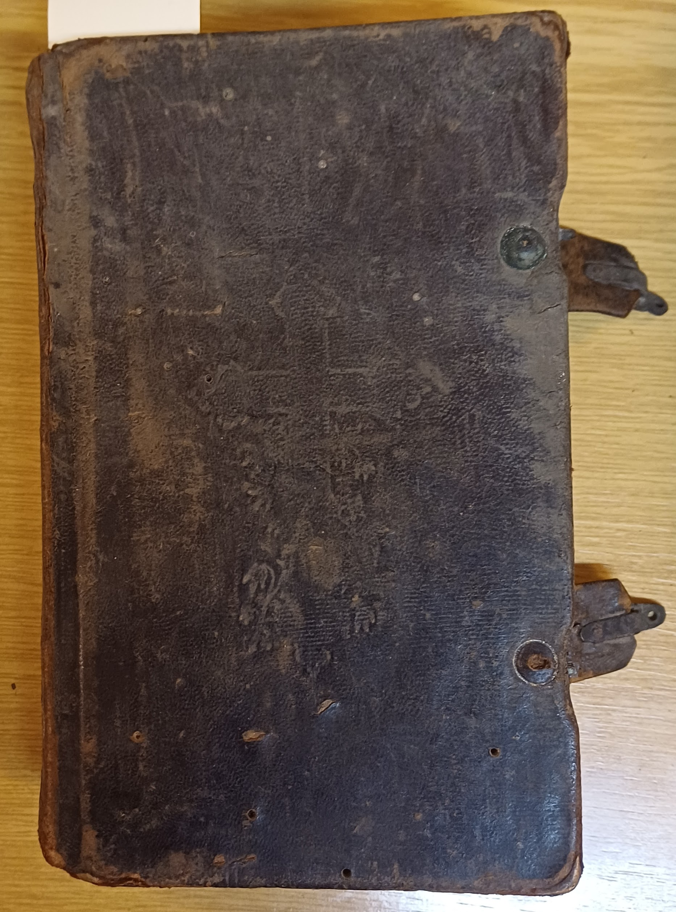

Bespoke Evening Clutches & Pochettes
Architectural silhouettes designed for gala evenings, private salon receptions, and diplomatic ceremonies, crafted to endure for generations.

The Sovereign Envelope
A seamless one-piece Shell Cordovan exterior folding over an unlined French chèvre interior. Secured by a discreet magnetic turncock and hand-rolled beeswax edges.

The Gilded Minaudière
A structured rigid-frame evening pochette framed in hand-chiseled architectural brass and clad in hand-skived black Shell Cordovan with French saddle joinery.

The Diplomatic Folio
Triple-gusset accordion interior engineered to organize evening essentials, passport credentials, and writing instruments without bulging the slim silhouette.

Architectural Drafting
Every clutch begins with hand-drafted heavy card templates calibrated to account for the unique stiffness and thickness of equine shell panels.

Manual Pattern Skiving
Panels are precision-cut by hand using round head knives, feathering perimeter margins down to 0.4 millimeters for seamless internal edge folding.

French Pricking & Awl Work
Stitch lines are marked at nine stitches per inch, hand-perforated with diamond-tipped awls angled at precisely forty-five degrees for sloped thread lay.

Hot Iron Edge Creasing
Heated brass edge irons glide along stitch borders, condensing the grain and creating an indelible decorative creased border accentuating panel geometry.